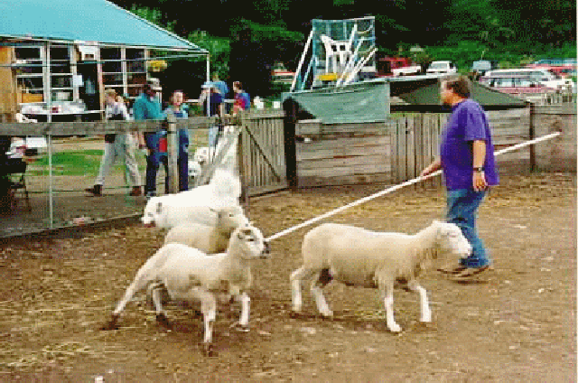

A year earlier, we had the opportunity of putting sam into a sheep pen and having the trainer watch his instinct and guide him at herding. He was in seventh heaven. To us, it looked as if he was just having fun chasing the sheep. At one point, a sheep tried to escape and jump the fence. It startled Sam, but from that point on (according to the trainer), whenever the sheep tried to leave the pack, Sam headed him off and put him back into the pack.
On the date of this picture, Sam had his second opportunity. The pole (thin PCV pipe that won't hurt the dog if hit) is used to guide the dog. The object is for Sam to continually circle the trainer and keep the sheep near the trainer. If he gets in too close to the sheep, he can be guided back with the pole. You can also head him off and direct him to turn around and circle the other way. He was put through through the paces for 5-6 minutes by this trainer and was rated as doing very well.
Trial 2 we tried later that day. It was with a different instructor. However, after a few minutes, the pole was given to me and I had to guide Sam with the instructor yelling commands at me the whole time. Then, to top it off, I had to call Sam off by voice command and have him stay while the sheep were put up.
With those two trials, he earned his Herding Capability Tested (HCT-s) title from the American Herding Breed Association. I want to do more, but have been having trouble finding the time. It is excellent exercise for the dog and they love it.
The Samoyed gets it name from the Samoyed Eskimos who used them as a helping partner in towing sleds and herding. They were also a part of the family and spend the night in the igloo, thus giving them their close tie to humankind. The A.K.C had catagorized the Samoyed as a working dog in the same catagory as huskies, but in the last few years, also allowed them into the herding catagory.
Ever wonder what kind of mileage a Dodge Ram 8L V10 gets?
Reciprocal Links:
Ron Bowser (samoyed@eskimo.com)
6 February, 1997